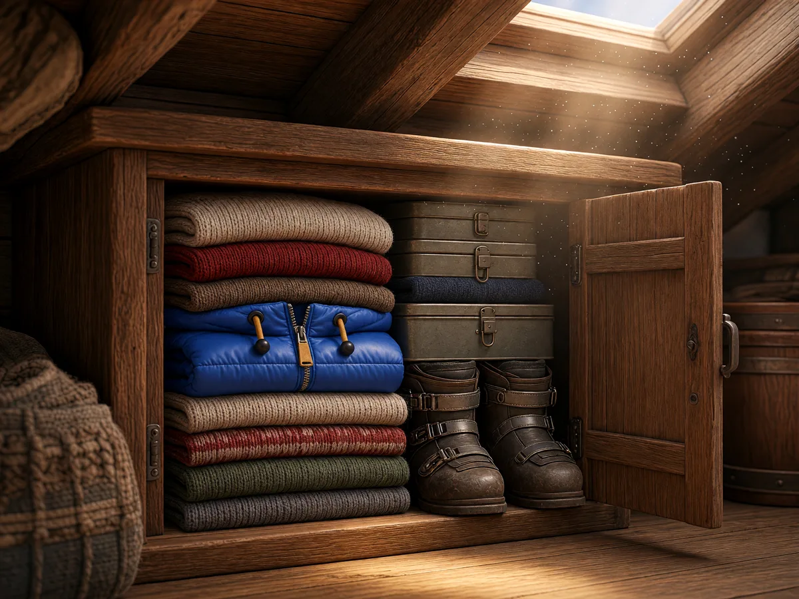
J'ai une veste qui dort
Si c'est chaud et propre, ça peut servir. Rapporte-la à la prochaine soirée dans ta station : le bar t'offre une boisson.
Voir la prochaine soirée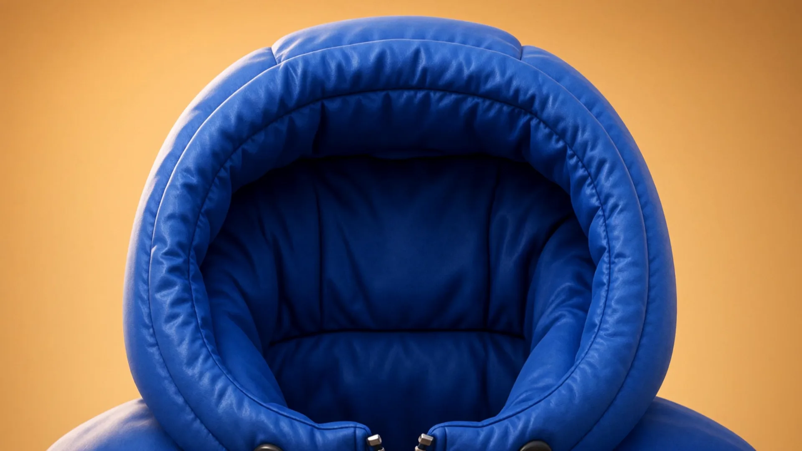
Dernier hiver pour cette veste… mais on va quand même la garder.
On la garde au cas où… mais souvent, ce jour ne vient jamais.
Alors la veste s'endort…
Mais ce soir-là, dans un bar de la station, on réveille les vestes.
Une veste rapportée, une boisson offerte.
Puis une association de solidarité prend le relais.
Et ce soir, cette veste va pouvoir réchauffer quelqu'un.
Le film raconte l'histoire d'une doudoune bleue. Elle s'ouvre sur une chambre ; pliée, elle apparaît dans l'armoire et d'autres vêtements s'empilent sur elle pendant que les saisons passent à la fenêtre. La nuit tombe, on monte vers la lune, puis on redescend vers un chalet de station dont l'affiche annonce la collecte du soir. Au comptoir, la doudoune est échangée contre une boisson. Une photo accrochée au mur s'anime : dans la rue enneigée, quelqu'un apporte la doudoune et la tend à une personne qui la prend dans ses mains gantées de mitaines.
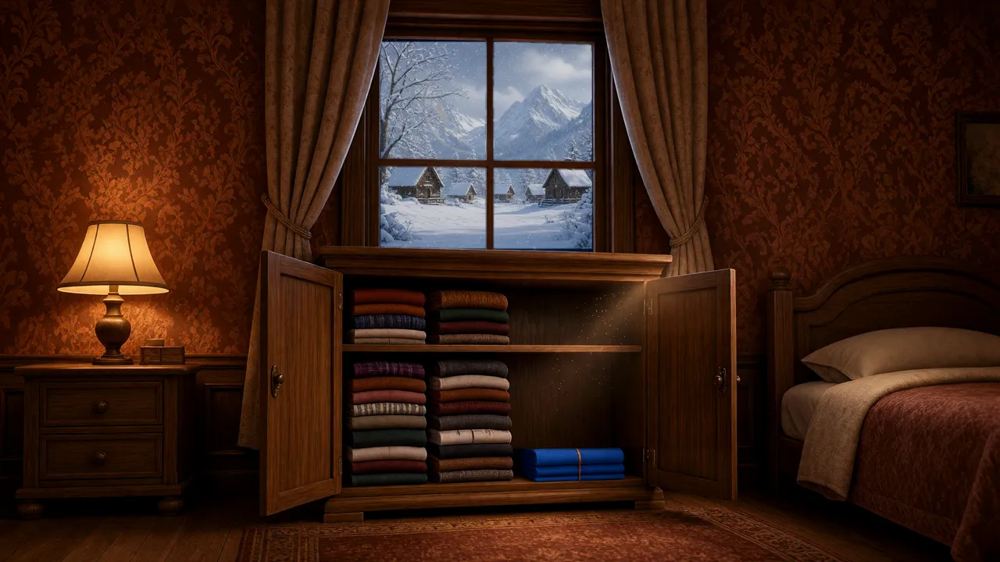
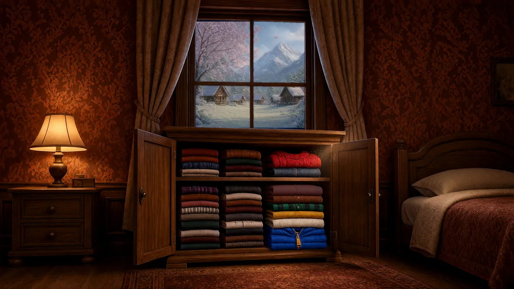
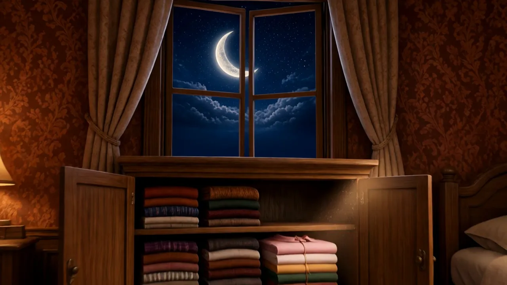
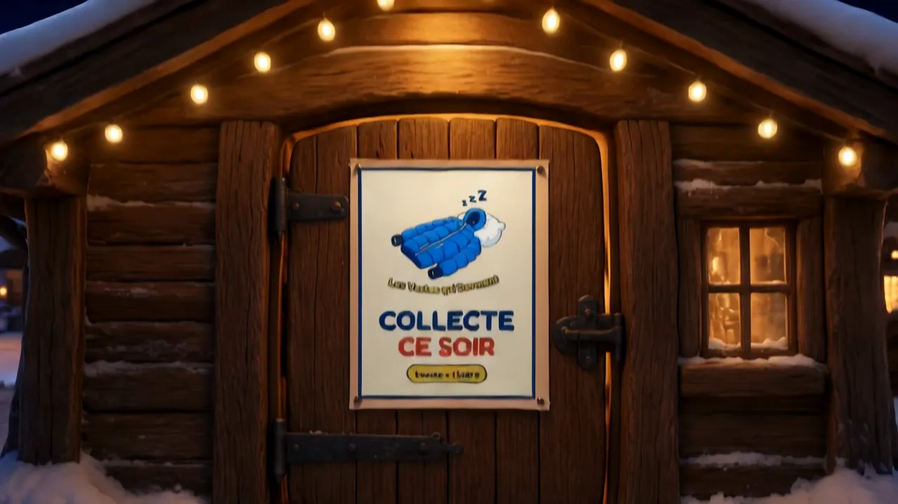
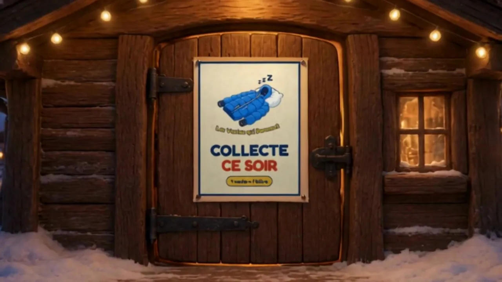
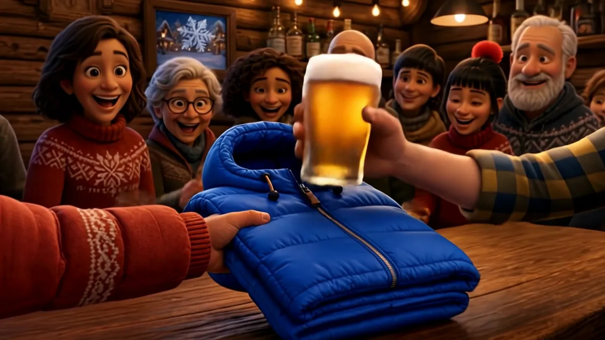
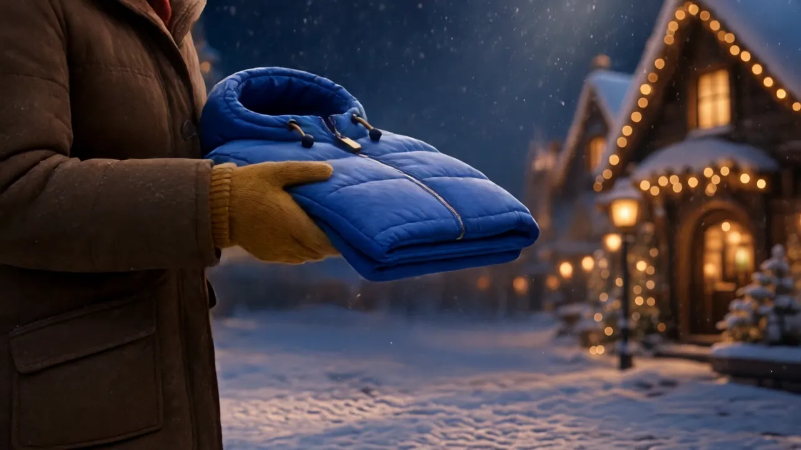
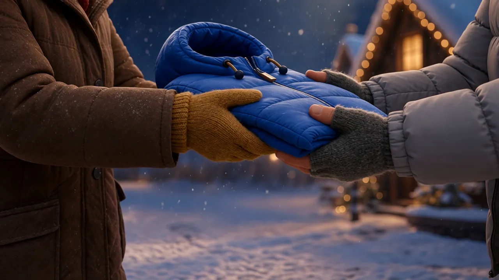
On réveille les vestes et le matos de montagne qui dorment au fond des placards pour les offrir à celles et ceux qui dorment dehors. La collecte se fait pendant des soirées dans des bars de stations de ski : le bar fait une belle soirée, on passe un bon moment, et les vestes repartent au chaud avec une association de solidarité partenaire.
Une veste rapportée au bar, une boisson offerte.

Si c'est chaud et propre, ça peut servir. Rapporte-la à la prochaine soirée dans ta station : le bar t'offre une boisson.
Voir la prochaine soirée
Une soirée qui fait venir du monde, une ambiance qui fait du bien, et ton bar associé à une action solidaire. On en parle et on cale une date ensemble.
Accueillir une soiréeÇa tourne à Avoriaz depuis deux ans. On cherche des référents locaux pour essaimer dans d'autres stations, et on t'aide à démarrer.
Voir comment ça marche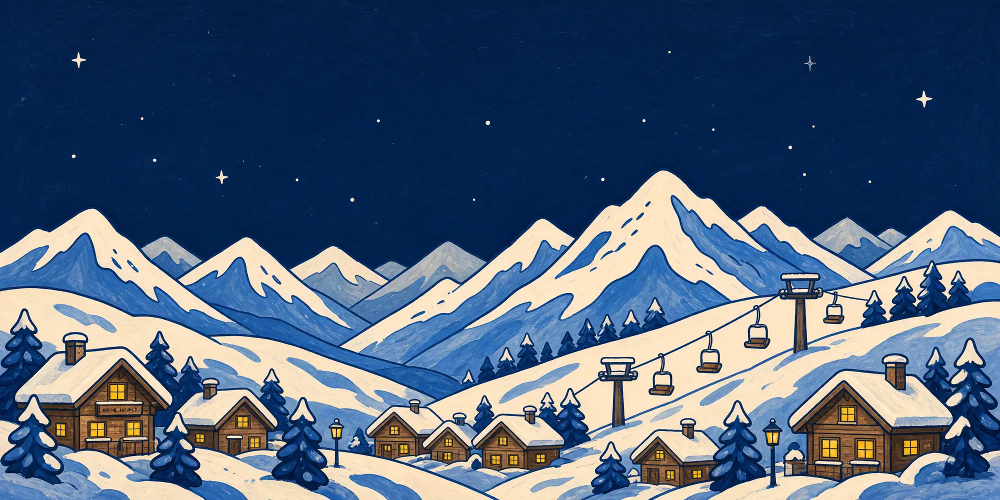
Ou directement : contact@lesvestesquidorment.fr